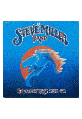
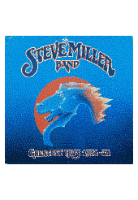

Updated 29th of March 2024
Plans upon plans. Ideas upon ideas. I haven't even finished the past ideas from the previous page at the time of writting this. However reader, (it seems to me I shall never be tired of calling you reader) if I don't get these ideas down on a page I will lose them forever. And if there's one thing I hate, it's losing great ideas. All the other planned ideas are still coming... eventually...
I really ought to make time for the website...
The Music
Recently I realised that my music has vanished from many of my pages. I suppose this is what I get for relying on a filesharing website to store them. I don't even remember what music I used on the main pages! A new system needs to be implemented. In part I have grown quite tired of the visage of the main pages, and removing the music bar would shake things up a bit. Not only that, but it always has posed problems, since it's very first implementation. Different browsers have different music player UIs, and some are quite ugly. Plus it stands out! It's not in the same design. No, no, it needs to go! We, dear reader, need to find a better solution for the music.
What I propose is not that difficult. I have already figured out how to implement clickable music text anywhere in the page to control the music in the Article 1 page. As such, I will most likely remove the old music bar and integrate the play/pause buttons somewhere in the header or the footer of the page. That ought to clean things up a little bit. I toyed around with the idea of designing a custom WebAmp theme to resemble how the page looks. However it really beat my ass on Linux, as Wine does not do a very good job of running the WebAmp editor. Who knows, perhaps one day that will become a thing...
As for where the music will be stored, I am not sure! It is abundantly clear any random file-sharing website will not do, and I already pay rent for 1 (one) website I barely update I cannot afford to pay for two sites and use only half of one.
The Music: Part 2
I have made some unwise financial decisions. Worry not, this is to be expected of a student! Now I may be starving, but at least I have a great collection of records! Finally moving my record player into my accomodation has opened the door to a whole new level of musical wonder. Cheap (and when I say cheap, read £10<) records galore. I have managed to snag some of my new favourite albums and listen to records I have owned for a long time but had yet to play. I wish to soon add a page on the website to display the records I have managed to get my hands on, along with reviews (and maybe even ways to listen to them in full in browser). Of course, this all needs to be done in a beautiful way, that also enables me to learn some new code. For how the records will be displayed, I think a shelf with floating spinning records would look good! Something like this:


 

Ill. #01 - Example of how the albums should be displayed.
Upon clicking on any album the website will take you to a new page, displaying a larger version of the spinning record, alongside the record and a way to listen to this album.
The Webring
For the longest duration of this site the Atomic Age Webring (the, at the time of writing, current webring of Meownarch) has been inactive and unused. Recently (though I am not sure how recently, I have not checked in a long time), a new person joined the webring. The concept is cool! A webring dedicated to sites that focus on certain areas of history. However, this website does not stick particularly well to talking about the past, no matter how much I love history, and often talks of personal details or projects.
I am afraid that the time will soon come to change webrings. But which webring should I join? Many have restrictions on speech (which, if you have read even a bit of my website, can understand I don't agree with), others are too restricting topic wise. I'm not even sure what sort of website csC is! How do I even classify this place? Some searching for Webrings is in order, and if no suitable ones are to be found, perhaps one could be made...
And I hope dearly this wouldn't go the way of The Retroweb Resort...
The Darkroom
So, in a conversation, a while back, literaturegirl decided to delete her photography page due to underuse. That got me thinking about photography. I love taking photos, and I'm somewhat decent at it. How come I have never thought of having my own photography page on my website? I think the time for it has come, dear reader.
I have a design for it in my head very clearly. It would be beautiful to see it come to light. However, the skill gap between what I want and what I can do is massive. This will be quite difficult to get right, and will require a lot of time to learn how to create. However, in plain words the idea is as follows:
The user is presented with a page. The background would (at least before The Library is implemented) be a dark room, like those used for developing photos. The user is presented with multiple rolls of film to choose from, perhaps either labeled by years, or camera name alongside a roll for edited photos. Clicking on a roll of film will turn it horisontally and unwind it to reveal the negatives in that category. The film will lie in the center of the page, and you can scroll to see each negative. At the bottom of the page you will see the roll you are viewing. Upon hovering on any negative, the picture will turn positive, in a swift gradual transition, and in yellow text to either side information about the photo will be displayed, like the camera, lens, year, etc.
As you can see, it's not a lot, however, the animations, transitions, fades, even things as small as tiling the film background for the photos, cause me a great amount of trouble. Plus, the mention of The Library refers to the fact I will likely have to change the background to a place in The Library once that project is finished.
Ill. #02 - Diorama model of how the photography page might look.
Here is a mockup of what the page should look like. Photos will be on film, and text displayed on the sides of it.
Old Project Revival
So recently to mark the 1 million views the website received, I decided to revive an old project that never saw official publishing, The Forgotten Books Archive. I fixed it up a litte bit and added some more books before publishing it officially. I need to add more books still, and make the category pages, but the page is in a good enough state now.
Forgotten Books Archive, however is not the only project that was shelved and never released. Another project that I plan to fix and, soon, release is the Romanian Urban Legends page! It is a page dedicated to translating and publishing various urban legends from my native country that have never seen the light of English, French, Spanish, or German speaking days.
Ill. #03 - Screenshot the long forgotten Romanian Urban Legends page.